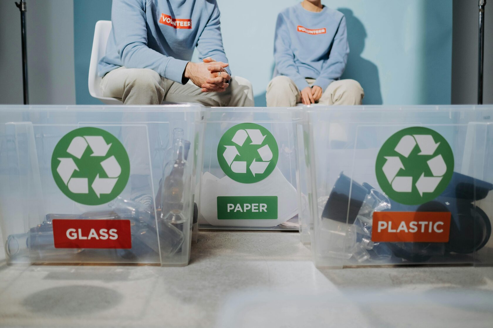

Recycling
From Collection to New Product: The Process of Waste Recycling
Recycling is certainly among the best methods for minimizing one's environmental footprint and preserving natural resources. But how, precisely, is waste transformed from abandoned articles to items of utility? Let us examine the step-by-step recycling process and its role in the roadmap to a sustainable future.
Recycling is certainly among the best methods for minimizing one's environmental footprint and preserving natural resources. But how, precisely, is waste transformed from abandoned articles to items of utility? Let us examine the step-by-step recycling process and its role in the roadmap to a sustainable future.

Step 1: Collection and Sorting
It is in the collection of the wastes that the journey starts for recycling. Households, businesses, and institutions will collect the recyclable papers, plastics, metals, and glasses in different collection bins. These are transported to the recycling facilities after sorting.
Advanced machines together with human labor sort them by type, color, and quality at the facilities. This step ensures waste is clean and ready to start being processed.
Step 2: Processing and Cleaning
After sorting, materials are cleaned to get rid of impurities. For example, plastics are washed to remove labels and food residue, while metals undergo processes to remove impurities. Cleaning is done appropriately to ensure that the material to be recycled meets quality standards for its reuse.
Step 3: Conversion to Raw Materials
After cleaning, the materials are processed into raw forms:
- Plastics are shredded and melted into pellets.
- Glass is crushed and melted to form new jars and bottles.
- Metals are smelted into sheets or blocks for manufacturing.
- Paper is pulped and pressed into fresh sheets.
These raw materials are sorted out and distributed to different factories for the creation of new products.
Step 4: Creating New Products
The last step is giving waste a second life. Recycled plastics become clothing, furniture, or new containers. Recycled paper comes back as notebooks, newspapers, or packaging. Metals come back as car parts, appliances, and building materials. Glass finds its way again as bottles, tiles, or in decorative items.
It is in the collection of the wastes that the journey starts for recycling. Households, businesses, and institutions will collect the recyclable papers, plastics, metals, and glasses in different collection bins. These are transported to the recycling facilities after sorting.
Advanced machines together with human labor sort them by type, color, and quality at the facilities. This step ensures waste is clean and ready to start being processed.
Step 2: Processing and Cleaning
After sorting, materials are cleaned to get rid of impurities. For example, plastics are washed to remove labels and food residue, while metals undergo processes to remove impurities. Cleaning is done appropriately to ensure that the material to be recycled meets quality standards for its reuse.
Step 3: Conversion to Raw Materials
After cleaning, the materials are processed into raw forms:
- Plastics are shredded and melted into pellets.
- Glass is crushed and melted to form new jars and bottles.
- Metals are smelted into sheets or blocks for manufacturing.
- Paper is pulped and pressed into fresh sheets.
These raw materials are sorted out and distributed to different factories for the creation of new products.
Step 4: Creating New Products
The last step is giving waste a second life. Recycled plastics become clothing, furniture, or new containers. Recycled paper comes back as notebooks, newspapers, or packaging. Metals come back as car parts, appliances, and building materials. Glass finds its way again as bottles, tiles, or in decorative items.

Why Recycling Matters
Recycling reduces waste in landfills, preserves energy, and decreases the rate of greenhouse gas emissions. This will also reduce the need for raw resources such as trees, oil, and minerals. It helps in protecting the ecosystem. Everyone can be part of this recycling process for better service to nature and keeping the environment friendly for future generations.
A Circular Economy for a Sustainable Future
Recycling is not only a process, it's a pathway to the circular economy where resources would be used in a continuous cycle. With better awareness and active participation, recycling can bring a positive change in the environment, converting today's waste into tomorrow's possibilities.
Let us make recycling a way of life!
Recycling reduces waste in landfills, preserves energy, and decreases the rate of greenhouse gas emissions. This will also reduce the need for raw resources such as trees, oil, and minerals. It helps in protecting the ecosystem. Everyone can be part of this recycling process for better service to nature and keeping the environment friendly for future generations.
A Circular Economy for a Sustainable Future
Recycling is not only a process, it's a pathway to the circular economy where resources would be used in a continuous cycle. With better awareness and active participation, recycling can bring a positive change in the environment, converting today's waste into tomorrow's possibilities.
Let us make recycling a way of life!
List of Recyclable Materials
Ecology is our responsibility
- Plastic
- PET (beverage bottles, packaging)
- HDPE (jugs, containers for household chemicals)
- PP (caps, food containers)
- LDPE (bags, films)
- Paper and Cardboard
- Newspapers, magazines, office paper
- Cardboard boxes, corrugated cardboard
- Paper packaging without wax coating
- Metals
- Aluminum (cans, foil)
- Steel (tin cans)
- Copper and brass (wires, old equipment)
- Glass
- Clear glass (bottles, jars)
- Colored glass (green, brown)
- Electronics and Batteries
- Old devices (phones, laptops, small appliances)
- Cables and wires
- Batteries and rechargeable batteries
- Organics and Textiles
- Food scraps, garden waste
- Natural fabrics (cotton, linen)
- Synthetic fabrics (polyester)
© Ecology is our responsibility. Environmental sustainability.